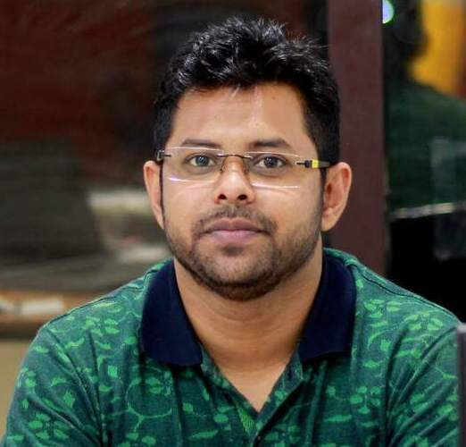

Indian Institute Of Information Technology,Raichur.
Computer Science and Engineering
Since September 2025
Indian Institute of Information Technology Guwahati, India.
Department: Computer Science and Engineering
North-Eastern Hill University, Shillong.
Department: Information Technology
2016 - 2018
Since September 2025
Indian Institute Of Information Technology,Raichur.
Teaching (Winter): Cyber Security,
Database Management System
Teaching (Fall): Signals and Systems, Introduction to Computer Science
September 2019 - October 2023
Indian Institute of Information Technology Guwahati, India.
In IIIT Guwahati, I have worked as a Teaching Assistant for various subjects such as Computer Networking Lab, Cloud Computing Lab,
Software Engineering Lab, Computer Programming Lab, Data Structure Lab, Algorithm Lab and Database Management Systems Lab.
March 2018- September 2019
National Institute of Electronics and Information Technology (NIELIT), Shillong.
I had been involved in the implementation of a Development of North Eastern Region (DoNER) project for the Ministry of DoNER under the banner of NIELIT Shillong and then worked
as a faculty. I was teaching various courses that fall under NIELIT courses. Moreover, I worked as a master trainer for "Advanced Excel" training program for the officials of the
Planning and Statistics Department, Meghalaya, India.
Ambassador — IEEEXTREME 16.0
IEEE | 2022
General Secretary (Welfare Board)
Students Gymkhana Council, IIIT Guwahati | 2022
General Secretary (Sports Board)
Students Gymkhana Council, IIIT Guwahati | 2022
Member, Departmental Post Graduate Program Committee (DPPC)
Department of CSE, IIIT Guwahati | 2022
Finance Secretary — CIPHER
Department of IT, NEHU Shillong | 2014–15
Finance Secretary — ANAKALYPSI’14
School of Technology, NEHU Shillong | 2014
Ex-Member, Creative Team ANAKALYPSI’14
School of Technology, NEHU Shillong | 2014
Volunteer & Participant — I3CS'15 & I3CS'16
International Conference on Computing & Communication System, NEHU Shillong | 2015–16